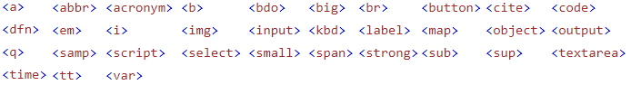

Every HTML element has a default display value, depending on what type of element it is. The two most common
display values are block and inline.
Block-level Elements
-
A block-level element always starts on a new line, and the browsers automatially add some space (a margin)
before and after the element.
-
A block-level element always takes up the full width availiable (stretches out to the left and right as far as it can).
Inline elements
-
An inline element does not start on a new line.
-
An inline element only takes up as much width as necessary.
